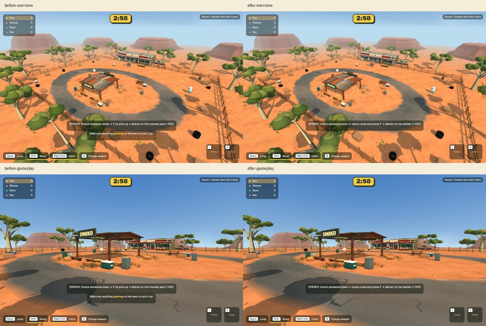
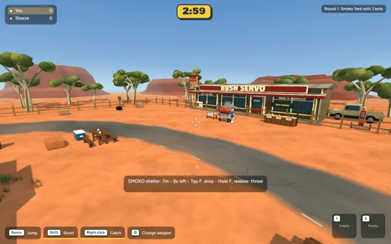

Smoko / Bush Servo becomes the reference map for performance and gameplay polish. This pass clarifies carrying and removes hidden Backyard update work while the Smoko map is active.
Same native Mac, gameplay camera and scene before / after. The visual changes are the context-specific prompt and removal of an unrelated Backyard tutorial hint; scenery and gameplay rules are unchanged.

Actual short capture sequence. The automated delivery review recorded one +100 award and zero carried players remaining.

600 intervals per run. Mean: 7.588 ms before, 7.521 ms after. P95: 9.017 ms before, 9.135 ms after. This small mixed change is within observed run-to-run variability; no FPS improvement is claimed. Mesh, material, entity and texture costs were unchanged. Browser host/guest frame pacing still needs an actual multiplayer device test.
244 app tests passed (one existing ignored); targeted Smoko regression tests include hidden-pool updates, Backyard return, contextual pickup, carry timing and guest state. Native release and browser WebAssembly builds passed. Checkpoint: recovery and limits. No commit, push or browser publication.
Local test: cd /Users/marcus/Claude/australian-bbq/rust && ~/.cargo/bin/cargo run -p bbq_app --release -- --menu